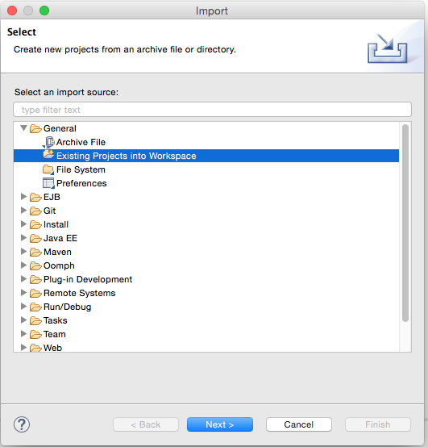
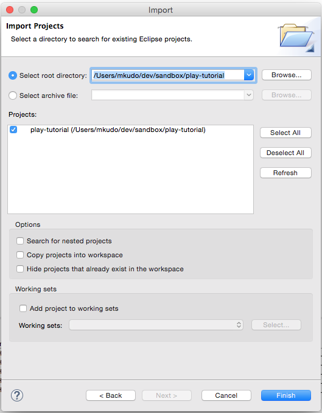
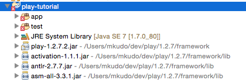
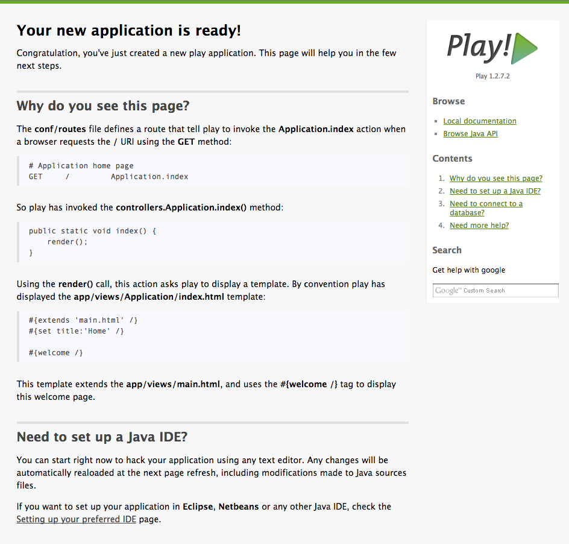

アプリケーションを作成する
アプリケーションの雛形を作成する
play new コマンドでアプリケーションの雛形を作成します。
ここでは play-tutorial という名称のアプリケーションを作成します。
$ play new play-tutorial
~ _ _
~ _ __ | | __ _ _ _| |
~ | '_ \| |/ _' | || |_|
~ | __/|_|\____|\__ (_)
~ |_| |__/
~
~ play! 1.2.7.2, http://www.playframework.org
~
~ The new application will be created in /path-to-path/play-tutorial
~ What is the application name? [play-tutorial]
~
~ OK, the application is created.
~ Start it with : play run play-tutorial
~ Have fun!
~成功すると以下の構成のディレクトリが作成されます。
app/
controllers/ # Controller クラスを配置する
Application.java
models/ # Models クラスを配置する
views/ # テンプレートファイルを配置する
Application/
index.html
errors/ # HTTPステータスコード毎のエラーページ
404.html
500.html
main.html
conf/
application.conf # アプリケーション設定ファイル
dependencies.yml # モジュール、ライブラリ、アプリケーションの依存設定ファイル
messages # 国際化対応用のメッセージファイル
routes # URLとコントローラのルーティングファイル
lib/ # 依存ライブラリが配置される
public/ # 静的ファイルを配置する
test/ # テストクラスを配置する
tmp/ # Play! が生成するバイトコードの配置先、添付ファイルの一時ファイルの配置先、等
アプリケーションを Eclipse プロジェクトとしてインポートする
Eclipse プロジェクトに変換する
play eclipsify コマンドを使って、作成したアプリケーションのディレクトリを Eclipse プロジェクトに変換します。
$ play eclipsify
~ _ _
~ _ __ | | __ _ _ _| |
~ | '_ \| |/ _' | || |_|
~ | __/|_|\____|\__ (_)
~ |_| |__/
~
~ play! 1.2.7.2, http://www.playframework.org
~
~ OK, the application "play-tutorial" is ready for eclipse
~ Use File/Import/General/Existing project to import /Users/mkudo/dev/sandbox/play-tutorial into eclipse
~
~ Use eclipsify again when you want to update eclipse configuration files.
~ However, it's often better to delete and re-import the project into your workspace since eclipse keeps dirty caches...成功すると、Eclipse 用の設定ファイル .project や .settings、eclipse ディレクトリ等が生成されます。
Eclipse にプロジェクトをインポートする

Eclipse の [File]-[Import...] を選択し、[General]-[Existing Projects into Workspace] を選択して「Next > 」ボタンをクリックします。

[Select root directory] にアプリケーションのディレクトリ指定します。
すると [Projects] 配下に play-tutorial が表示されるので、選択して「Finish」ボタンをクリックします。
成功すると Project Explorer 上に play-tutorial が表示されます。

Eclipse の設定によっては、play-tutorial プロジェクトに赤いマークが表示されているかもしれません。 この場合は [Project]-[Clean...] より一度再ビルドを行ってみてください。
アプリケーションを起動する
Eclipse 上から、play-tutorial/eclipse/play-tutorial.launch を選択し、[右クリック]-[Run As]-[play-tutorial] を選択します。
起動に成功すると、Eclipse コンソールに以下のメッセージが表示されます。
Listening for transport dt_socket at address: 8000
16:05:53,142 INFO ~ Starting /Users/mkudo/dev/sandbox/play-tutorial
16:05:53,659 WARN ~ You're running Play! in DEV mode
16:05:53,747 INFO ~ Listening for HTTP on port 9000 (Waiting a first request to start) ...
~ Server is up and runningブラウザを開き、http://localhost:9000/ にアクセスすると以下のページが表示されます。
